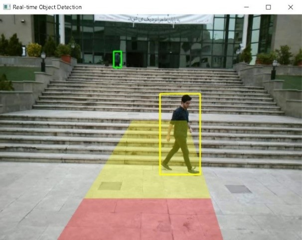
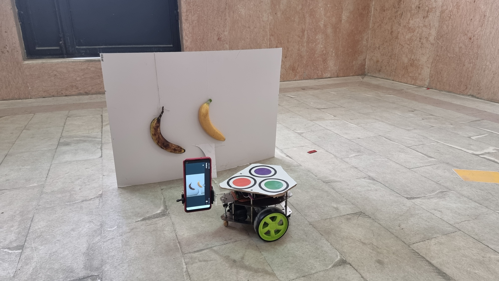
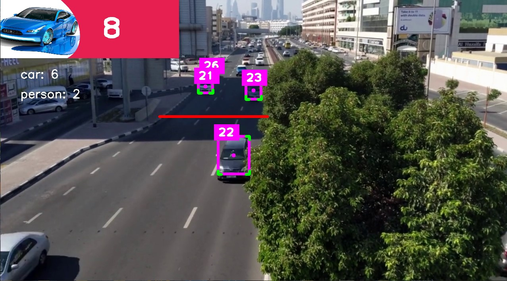
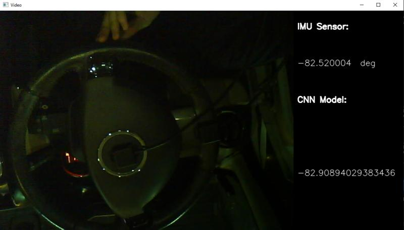
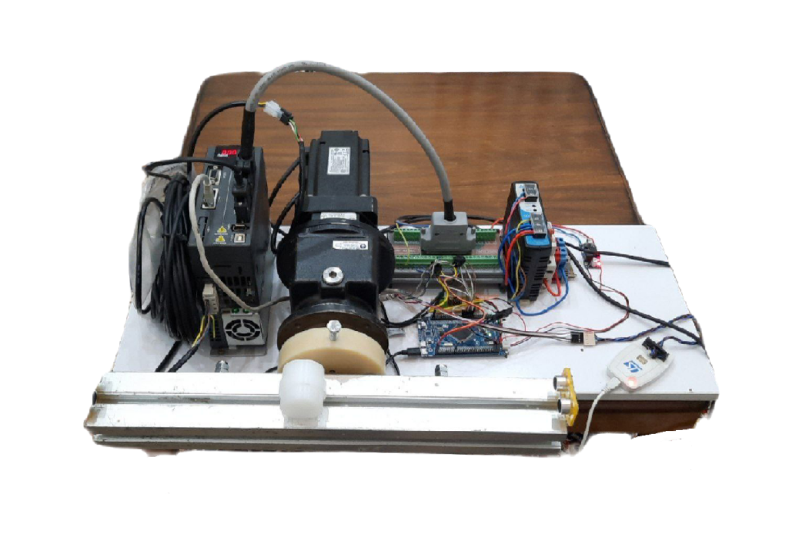
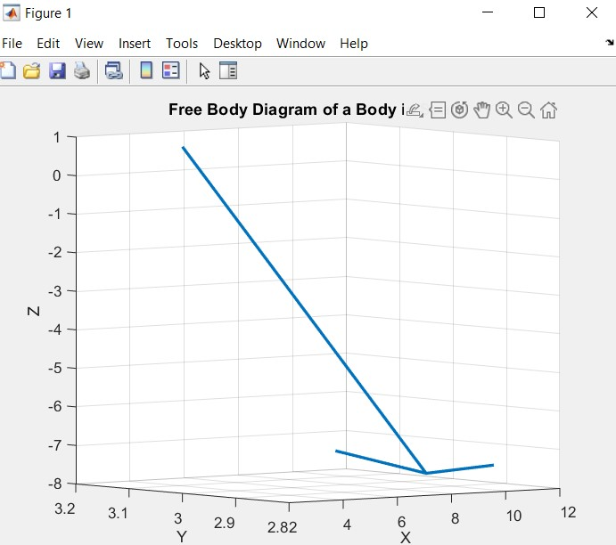
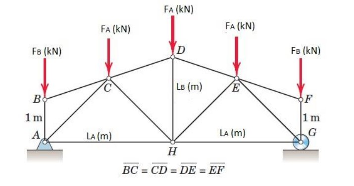
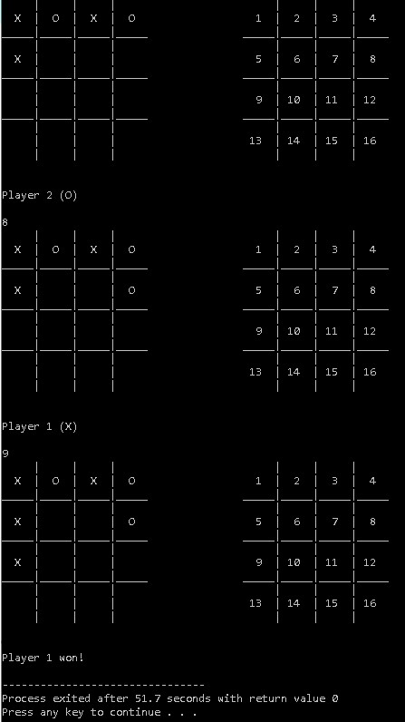
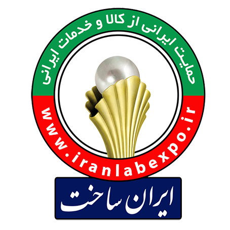
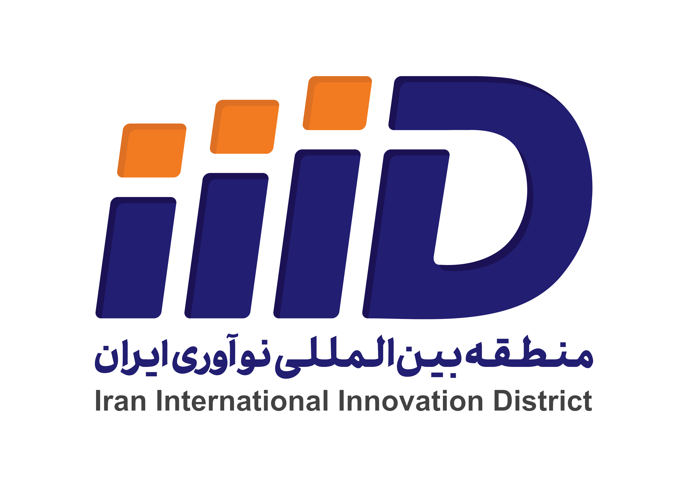

About Me
Hello! I'm Mohammad Maleki Abyaneh, a passionate Mechatronics Engineer currently pursuing my Bachelor's degree in Mechanical Engineering at K. N. Toosi University of Technology. I have a strong focus on Artificial Intelligence and Robotics, with expertise in developing real-time AI systems and automation solutions for complex industrial applications.
My work involves the intersection of mechanical engineering, electronics, and AI to create innovative solutions. I am particularly interested in computer vision, image processing, and neural networks to improve automation and safety systems.
My key technical skills include:
- Proficiency in Python, MATLAB, and C++
- Advanced AI and Machine Learning models with TensorFlow and PyTorch
- Control system design and automation with robotics and embedded systems (Arduino, ESP32)
- Deep learning, neural networks, and computer vision
- Image processing for industrial and automation applications
- Mechatronics and integrating software with hardware systems
Download my resume: Download Resume
Experience
Teaching Assistant | K. N. Toosi University of Technology
Sep 2023 - Feb 2024
Teaching Assistant for computer programming in C++.
Helped in teaching advanced programming topics in C++ like Object-oriented programming, pointers, and so on.
Intern | Nasir Driving Simulator
Tehran, Iran | Apr 2024 - Present
- Developed a safety zone detection system for dump trucks using YOLO and OpenCV.
- Integrated neural networks to analyze weather conditions and dynamically adjust safety zone sizes.
- Collaborated with engineering teams to implement AI-driven solutions for industrial safety.
- Demonstrated expertise in developing machine learning models for real-time data analysis.
Company Website: Nasir Driving Simulator
Projects
- 🚜🔴🌧❄ Real-time Collision Avoidance Smart System for Dump Trucks using Deep Learning
- 🤖🍌 Autonomous Agricultural Robot Navigation and Object Detection
- 🚗 Vehicle Detection and Counting System Using YOLO and SORT Tracker
- 🤖🏨 Smart Hospital
- 🚗 CNN-Based Steering Angle Estimation
- 🩺 Fatty Liver Disease Diagnosis using Neural Networks
- 👗👖 Clothing Classification using CNNs
- 🎱 Control of Ball Position on a Horizontal Rod
- 🎯 Inverted Pendulum Control System
- 📐 Rise and Slope Calculation in Beams
- 🏗 Truss Structure Analysis Project
- ❌⭕ Tic-Tac-Toe Game
This project develops a hazard zone detection system for dynamic dump trucks, analyzing road conditions and potential risks using advanced algorithms.
Technologies: Python, Image Processing, Machine Learning
GitHub Repository: View on GitHub
In this project, we built an autonomous robot that can navigate environments and detect objects using computer vision and sensor fusion techniques.
Technologies: ROS, Python, OpenCV
GitHub Repository: View on GitHub
This project utilizes the YOLO algorithm to detect and count vehicles in real-time, helping with traffic monitoring and analysis.
Technologies: Python, OpenCV, YOLOv10, TensorFlow
GitHub Repository: View on GitHub
This project is an autonomous robot designed for navigating hospital environments. It uses Aruco markers for object detection and tracking to interact with its surroundings in real-time.
Technologies: Python, OpenCV, Aruco Markers, ESP32


GitHub Repository: View on GitHub
This project utilizes Convolutional Neural Networks (CNNs) to estimate the steering angle of a vehicle from images, helping in autonomous driving systems.
Technologies: Python, TensorFlow, CNN
GitHub Repository: View on GitHub
This project focuses on diagnosing fatty liver disease using neural networks. It uses patient data to train the model for accurate predictions of liver conditions.
Technologies: Python, TensorFlow, Keras, Neural Networks, Pandas, NumPy, Data Preprocessing

GitHub Repository: View on GitHub
This project uses Convolutional Neural Networks (CNNs) to classify various clothing types such as shirts, pants, dresses, and more. It achieves high accuracy through deep learning techniques and data augmentation.
Technologies: Python, TensorFlow, Keras, CNN, Pandas, NumPy, Data Augmentation

GitHub Repository: View on GitHub
This control system project focuses on maintaining a ball's position on a horizontal rod using PID control techniques.
Technologies: MATLAB, Simulink, Control Systems
GitHub Repository: View on GitHub
This project involves designing a control system to stabilize an inverted pendulum. The system is modeled and simulated using Matlab, with a PID controller ensuring the pendulum maintains a stable vertical position (θ = 180°) from an unstable starting position (θ = 0).
Technologies: Matlab, Simulink, Control Systems, PID Controller
GitHub Repository: View on GitHub
This project focuses on calculating the rise and slope in beams, crucial for structural engineering applications.
Technologies: C++, Strength of Materials principles.

GitHub Repository: View on GitHub
This project focuses on the structural analysis of trusses. A C++ program reads input files containing data for different case studies and computes the forces acting on the truss members.
Technologies: C++, Structural Mechanics
GitHub Repository: View on GitHub
This project is a classic Tic-Tac-Toe game implemented in C++. It allows two players to take turns marking their symbols on a 4x4 grid and determines the winner or if the game ends in a draw.
Technologies: C++
GitHub Repository: View on GitHub
Exhibitions Attended
One of the notable exhibitions I attended is the IranSakht Exhibition, held in April 2024. This event showcased advanced technological innovations, and I gained insight into groundbreaking products such as concrete testing machines and LiDAR-based vibration sensors.
The exhibition was an excellent opportunity to connect with industry leaders and explore the latest advancements in mechanical engineering, concrete technology, and industrial automation.
Website: IranSakht Exhibition
Report of the IranSakht Exhibition: Read the detailed report here.
Interests
- 🏋️♂️ Bodybuilding (Professional)
- 🏓 Table Tennis (Professional)
- 🚀 Entrepreneurship and Leadership
Honors & Awards
Direct master admission from National Organization for Development of Exceptional Talents
Sep 2024 | K. N. Toosi University of Technology
Ranked within the top 5% of mechanical engineering students from the same year of entrance
Sep 2024 | K. N. Toosi University of Technology
Ranked within the top 1.5% in the Iranian University Entrance Exam
Aug 2020
Scholarship from Pardis Technology Park (PTP) as a top talented student
Sep 2024 | Pardis Technology Park (PTP)
I was awarded a prestigious scholarship by Pardis Technology Park, which supports top talented students in Iran. The scholarship reduced the fee for an intensive training program from 24 million IRR to 4 million IRR, allowing me to access industry-focused education designed to prepare students for the job market. This program is part of PTP's mission to nurture innovation and bridge the gap between academic knowledge and industry needs, enabling participants to gain practical skills for a smooth transition into professional roles.
Website: Pardis Technology Park (PTP)
Contact
You can reach me at: